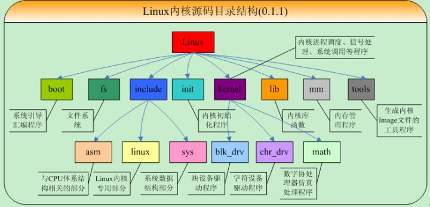

如何获取linux内核源码？
一般来讲，在安装的linux系统下，/usr/src/linux目录下的东西就是内核源代码。还可以从互联网上下载,解压缩后文件一般也都位于linux目录下。
Linux内核源码查看网址推荐：https://elixir.bootlin.com/linux/latest/source
Linux内核源码的组成（假设相对于linux目录）：
- arch：包含了此核心源代码所支持的硬件体系结构相关的核心代码，如对于X86平台就是i386
- include： 包含了核心的大多数include文件，另外对于每种支持的体系结构分别有一个子目录
- init：包含了核心启动代码
- mm：包含了所有的内存管理代码
- net：核心的网络部分代码，里面的每个子目录对应于网络的一个方面
- lib：包含了核心的库代码
- scripts：用于配置核心的脚本文件
- Documentation：一些文档，起参考作用
- block：块I/O层
- crypto：加密API
- drivers：设备驱动
- firmware：使用某个驱动需要的设备固件
- fs：VFS和独立文件系统
- ipc：进程间通信
- samples：示例代码
- security：Linux安全模块
- sound：声音子系统
- usr：早期的用户空间代码（叫做initramfs）
- tools：辅助Linux开发的工具
- virt：虚拟化基础设施
- COPYING：内核许可描述文件
- CREDITS：参与Linux内核的开发人员名单
- MAINTAINERS：维护各个子系统和驱动的个人
- Makefile：内核Makefile的基础
- Kbuild：kernel build的意思，即内核编译的意思，linux内核特有的内核编译体系需要用到的文件
- modules：存放了已建好的、可动态加载的模块文件目录，是个空目录，用于存放编译时产生的模块目标文件
- README：核心及其编译配置方法简单介绍
- Kconfig：配置内核时脚本，里面包含了可选项和菜单功能

阅读内核源码方式推荐：
开始最好按顺序阅读启动代码，然后进行专题阅读，如进程部分、内存管理部分等
使用Source Insight阅读源代码